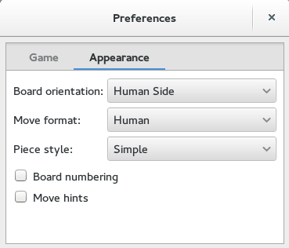

Change look and feel
You can make the game more interesting by changing its appearance. To change:
Click Chess ▸ Preferences.
-
Select the Appearance tab. The Appearance looks like:
 The default Move format is Human, you can set it to Standard Algebraic, Figurine or Long Algebraic.
You can change the chess pieces as well, to change set the Piece Style to Fancy.
You can get the board numbering by checking the Board numbering.
To get the hints while moving, check the Move hints.